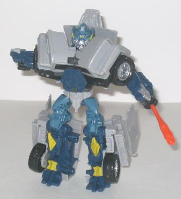
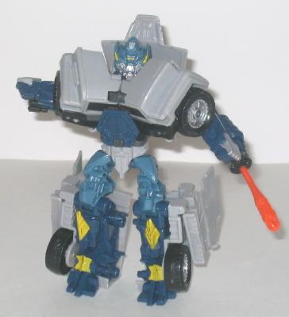

(NOTE: Because this is a repaint, this is not a full-blown review. This mainly covers any changes made to the mold and the color scheme, and merely compares it to Cannon Blast Ironhide. For a review on the mold itself, read the review of Cannon Blast Ironhide here .)
Pulse Cannon Ironhide's
paint job is certainly more varied than the mold's predecessor, that's
for sure. Light gray is the dominant color in vehicle mode, making Ironhide
look quite realistic is said alt mode, albeit a bit boring. In robot mode,
though, many new colors make themselves much more apparent-- two different
shades of blue are the two new main colors, with silver, orange, and dull
yellow being secondary colors in this mode. The colors don't outright clash,
but I don't think they work quite as well as Ironhide's original, mostly
black, color scheme. Using two different colors of blue right next to each
other doesn't provide enough contrast between them, in my opinion, and
the yellow on the legs looks rather out of place. (On the plus side, thoguh,
Ironhide's head is considerably more detailed paint-wise this time around.)
The missile is also a dull orangish red, which definitely makes it stand
out like a sort thumb against Ironhide's otherwise cool-tone colors.
No mold changes have
been made to Pulse Cannon Ironhide.
Pulse Cannon Ironhide
is a decent enough repaint, with lots of color variation and some cool
contrast colors, but ultimately I don't think it quite measures up to Cannon
Blast Ironhide's movie-accurate colors, primarily because of how boring
the alt mode look in contrast. The use of the bits of dull yellow and orange
in robot mode also don't mesh all that well, either. Oh yeah, and the mold
is still a stinker.
Review by Beastbot